After our startup was acquired by Tableau, I led design for Project Nexio — the 0→1 initiative that became Tableau Pulse, Salesforce's AI-powered business monitoring platform. Showcased live at Dreamforce 2022 with branded demos from L'Oréal, Ford, and Truist Bank.
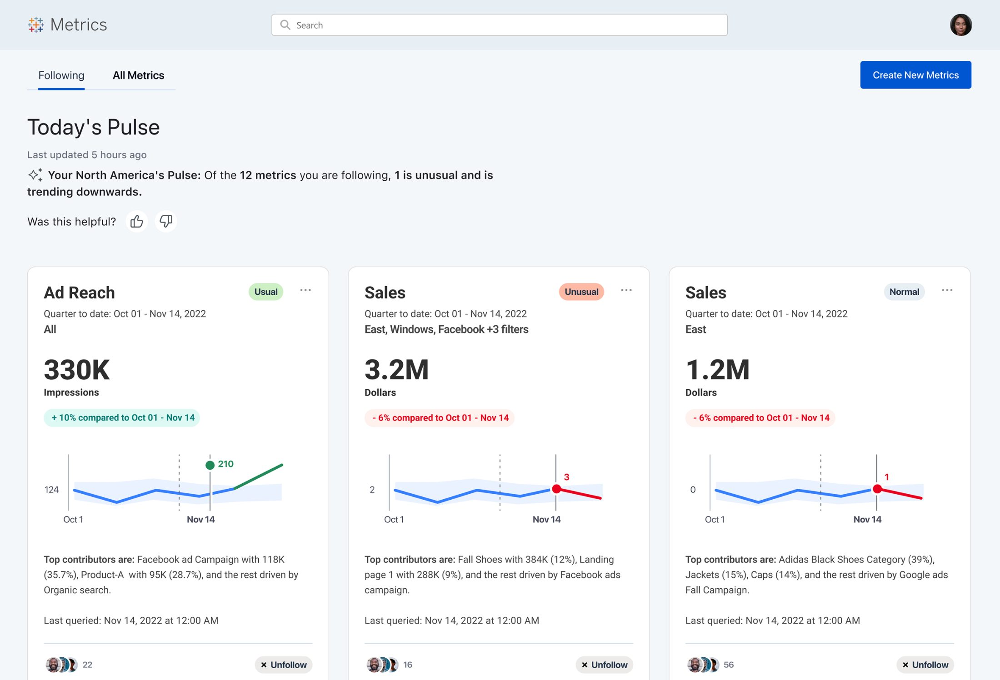
In 2021, Narrative Science — the startup where I was a product designer — was acquired by Tableau, which had itself been acquired by Salesforce. Overnight, our ~60-person team became part of one of the largest enterprise software ecosystems in the world.
We had a tiny, scrappy core product group: 3 designers, 3 PMs, ~45 engineers. The environment was intense — high expectations, unfamiliar systems, unclear leadership structures, and a significant amount of organizational ambiguity to navigate.
That gap was the opportunity. And Project Nexio was how we went after it.
The core UX challenge wasn't just "make data readable." It was: how do you design for confidence in AI output when users don't know why the AI surfaced something, whether to act on it, or whether to trust it at all?
We were designing for business users — not analysts. People who make fast decisions and have no patience for dashboards, but who also can't afford to act on a wrong signal. The AI needed to feel authoritative without being opaque. Helpful without being condescending. Urgent without being noisy.
That tension — between surfacing AI confidence and maintaining user trust — shaped every major design decision on this project.
I was loaned from the Narrative Science design team to the Tableau Pulse team — which meant I had to build credibility fast in a new organizational context, with a new PM, new engineering team, and new design manager, while still staying connected to my original team's direction.
When Narrative Science was acquired, we didn't just join Tableau. We brought a conviction: that AI could make data tell its own story, for everyone, not just analysts. Project Nexio was the Salesforce wide vision discovery that carried that conviction forward. My manager and I drove it, rallying the acquired team to pitch a next generation AI data storytelling future to leadership across every cloud.
There was a vision, but no structure to make it real:
I was loaned in as a design lead, reporting to one manager while being overseen by another. The structure was complex and the direction was rarely clear. So I led with influence, not just craft, using a simple framework to turn ambiguity into momentum.
Partnered closely with my design manager and the PM leads, the small, influential group who could drive org wide alignment.
Facilitated design workshops to shape a shared vision and gather input from cross functional teams across orgs.
Published design explorations early and often, using visuals to align stakeholders and build momentum.
Earned trust and ownership of critical features: the Pulse homepage, search, and follow and metric management.
Before any screens, I mapped the conceptual model: how an AI navigates a single metric to generate a story. Analysis from a metric looks sideways and outward, to history, drivers, contributors, and external benchmarks. Movement between metrics chains shifts in time, granularity, and related measures. This systems view became the backbone for every downstream flow.
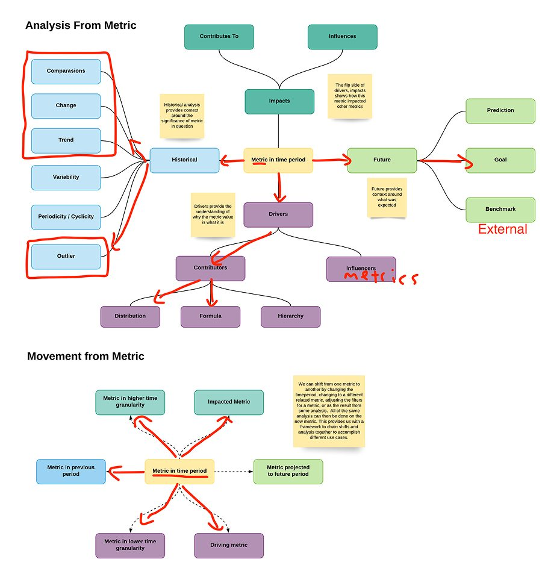
The business user was never one person. We anchored the work in three: Maggie, a sales manager who needs to spot and address problems fast; Ian, an individual contributor getting up to speed on what matters; and Emily, an executive deciding where to invest and what to scale. Every flow traced back to one of them.
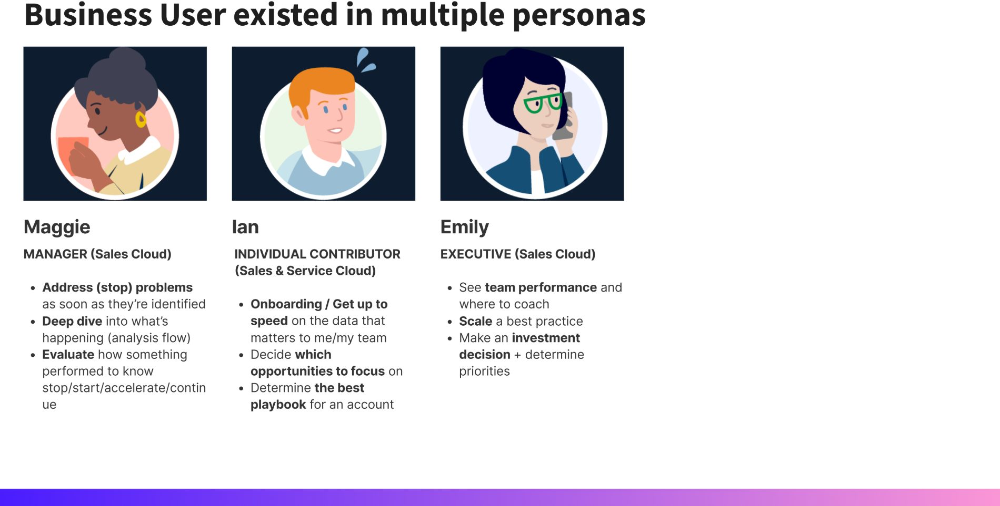
I translated the model into end to end flows, iterating across three sprints to pressure test how the experience held up at real scale. The breadth mattered: each branch explored a different persona, surface, and moment of insight.
Scroll to pan across the full breadth of the exploration.
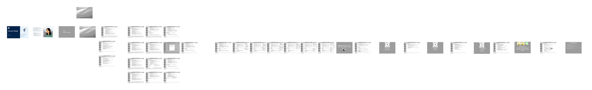
Each flow followed a real persona through a real scene. Here is Ian, an individual contributor in his first week, getting his footing in Salesforce. The story moves from a welcome state to a focused, metric following home that meets him where he is.
Scroll to follow Ian's scenario across the flow.
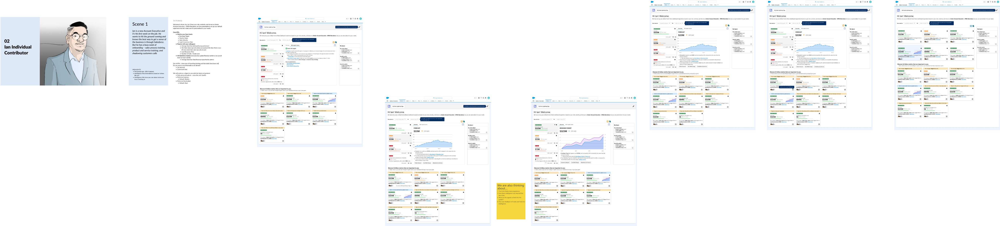
The final sprint raised the fidelity all the way up. Emily, an executive, reads the state of her business in a personalized command center, pushes her exploration into a team Slack channel to ask why a number moved, then scales a best practice and coaches her team, all without leaving the flow of work.
Scroll to follow Emily's executive flow, the highest-fidelity sprint.
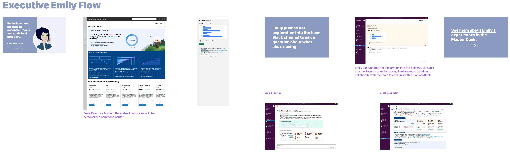
Each concept showed AI authored data stories meeting a different persona where they already work, from Slack to the inbox to the executive command center. Together they made the future tangible enough for leadership to fund.
Scroll to move through the five concepts, one persona at a time.
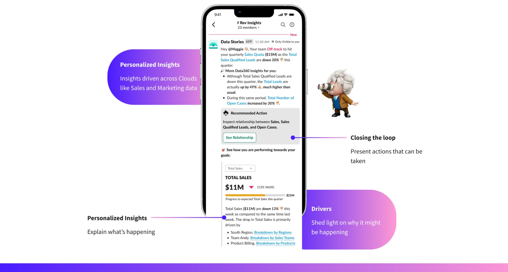
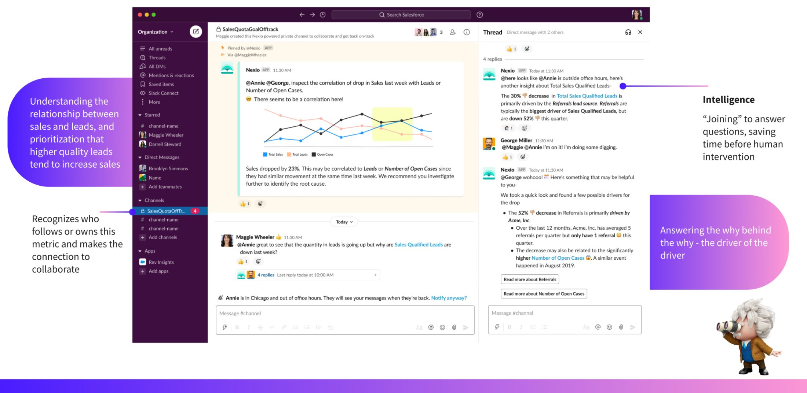
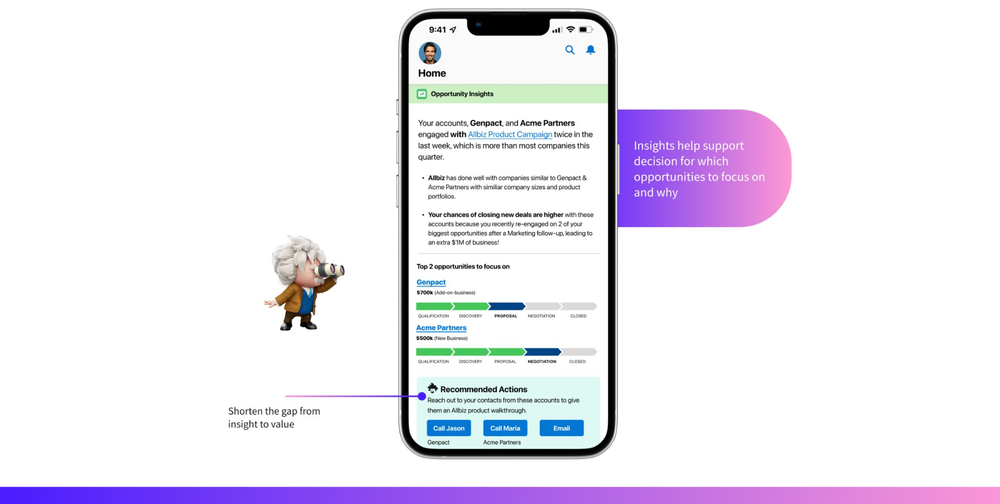
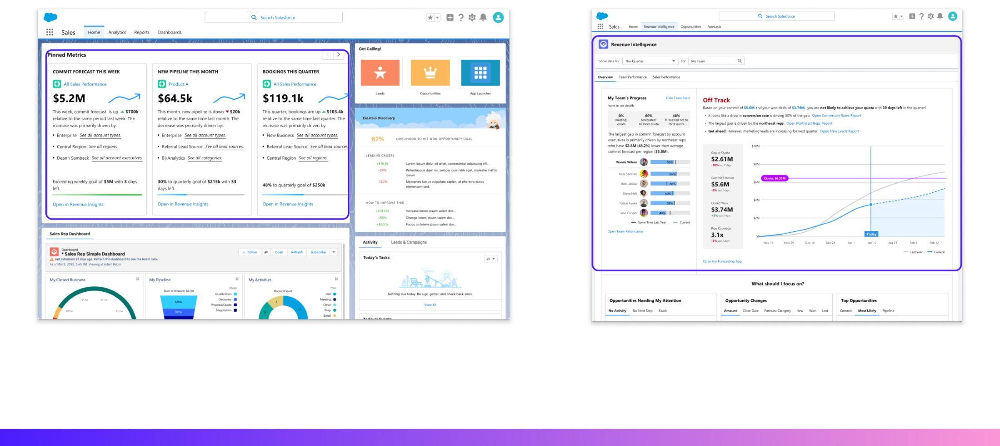
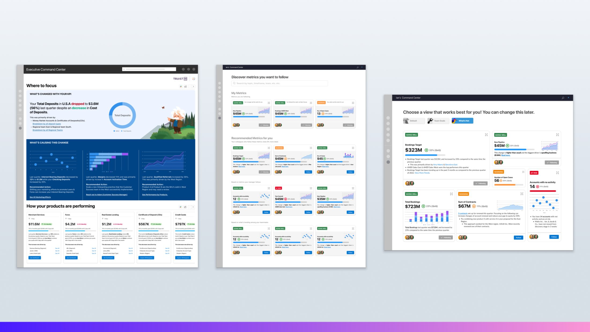
With differing executive opinions and a fragmented org structure, I knew we couldn't design our way to clarity. We had to earn it. I focused on building strong working relationships with a core trio — one PM and my two design managers — as an anchor, then broadened out to sales teams, cross-functional PMs, and engineering leads to gather diverse perspectives and build influence.
From that foundation, we ran extensive user research across three core personas — the business executive, the operational manager, and the analyst. We ran workshops with PMs, engineers, and architects to build comprehensive journey maps that gave us a shared language across the org.
Rapid iteration was the engine. I worked directly with the PM to refine use cases and scenarios for the two primary personas, testing concepts with real customers early enough to course-correct before we committed to engineering.
We could have shown users raw statistical variance. Instead, we translated AI confidence into plain-language status labels — Usual, Unusual, Normal. This required close alignment with Data Science to ensure the labels mapped accurately to model outputs, but it made the AI feel legible without dumbing it down.
We debated whether to make the homepage or the email digest the "front door" to Pulse. We chose email — because business users live in their inbox, not in analytics tools. This meant designing an experience that had to work standalone, without any Pulse context, while still driving users back to the product.
Rather than forcing users into filter panels to investigate anomalies, we designed a conversational "Ask a question" interface on the metric detail page. This was a significant bet on AI UX patterns that were still unproven at enterprise scale — but research showed it matched how business users actually think about data.
We added follower counts and team-based metric recommendations to the homepage and search. The insight from research: business users trust what their colleagues track. Social proof reduced the decision overhead of "which metrics should I follow" — a critical onboarding friction point.
I owned the end-to-end design for the Pulse steel thread — Homepage, Email Digest, Metric Detail, Search typeahead, and Search results — ensuring they worked as a unified experience across every entry point.
It all starts with one unit: the metric card. Every element earns its place — translating a wall of statistics into something a business user can read in seconds, trust, and act on. Get this right, and it scales across every surface.
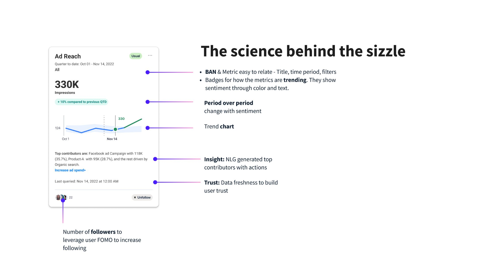
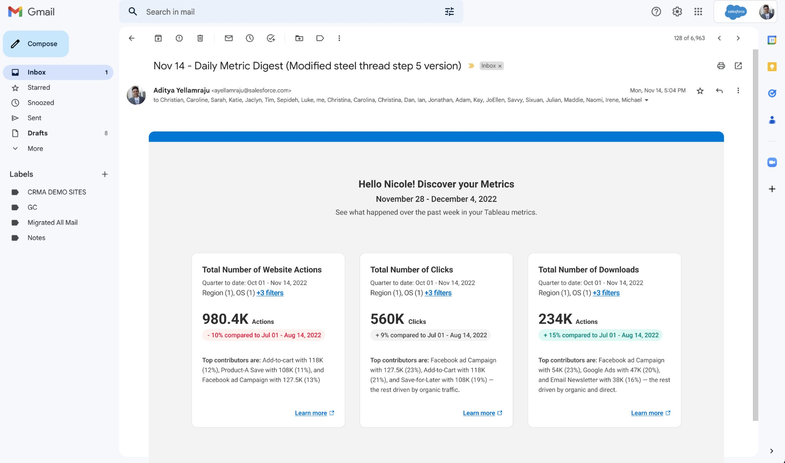
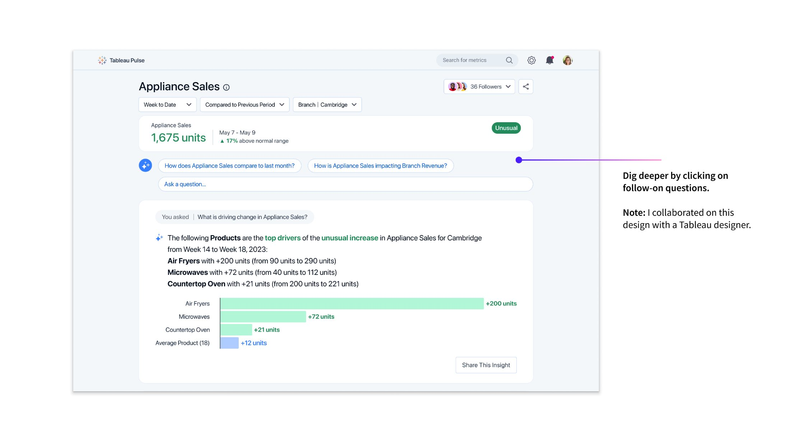
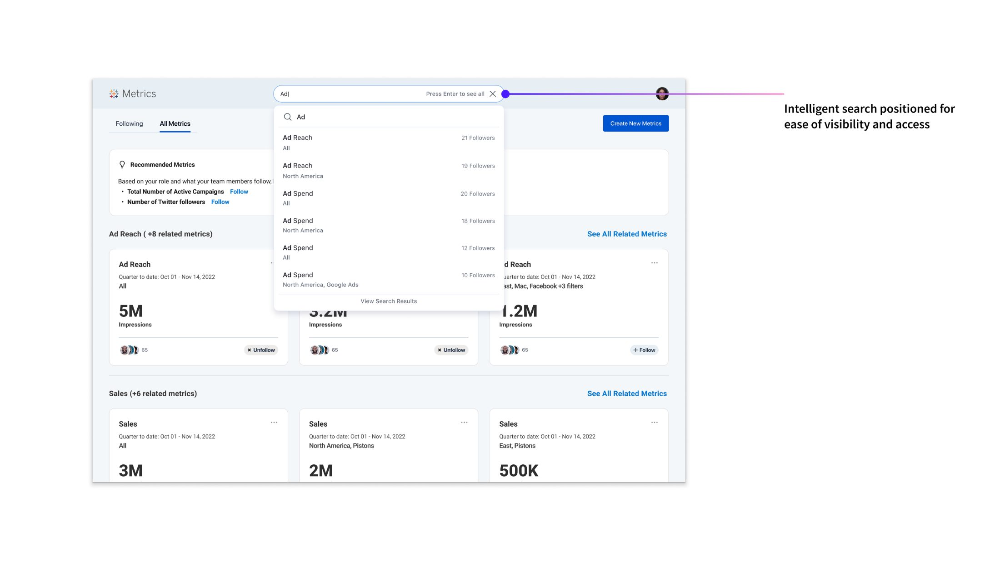
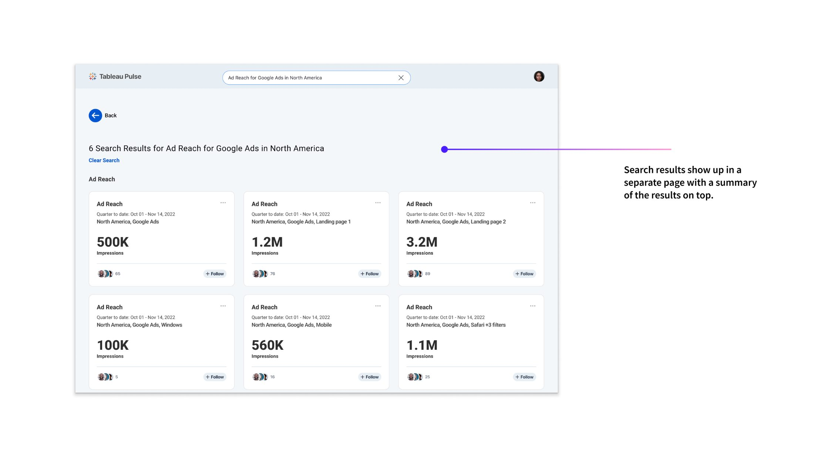
Tableau Pulse was demoed on the main stage with branded, live demos from L'Oréal, Ford, and Truist Bank — a direct result of the customer validation work that helped secure executive buy-in.
Beyond the numbers, this project helped pivot Tableau toward a business-user-first analytics strategy — shifting the product's center of gravity from analyst-centric dashboards toward ambient, AI-driven intelligence for everyday decision-makers.
I'd invest earlier in an explicit AI explainability framework. We spent a lot of cycles debating how to communicate AI confidence case-by-case. In hindsight, establishing shared principles for how the product surfaces uncertainty — across the homepage, email, and detail view — before design started would have accelerated alignment and produced a more consistent system.
I'd also push harder for a defined onboarding flow from day one. The follow/recommendation system worked well once users understood it, but we underinvested in the moment when a new user asks "where do I even start?" The first-run experience was something we iterated on reactively rather than designing proactively.
These aren't failures — they're the natural result of moving fast in a post-acquisition environment with high ambiguity. But they shaped how I approach AI UX today: explainability and onboarding are not features you add at the end.